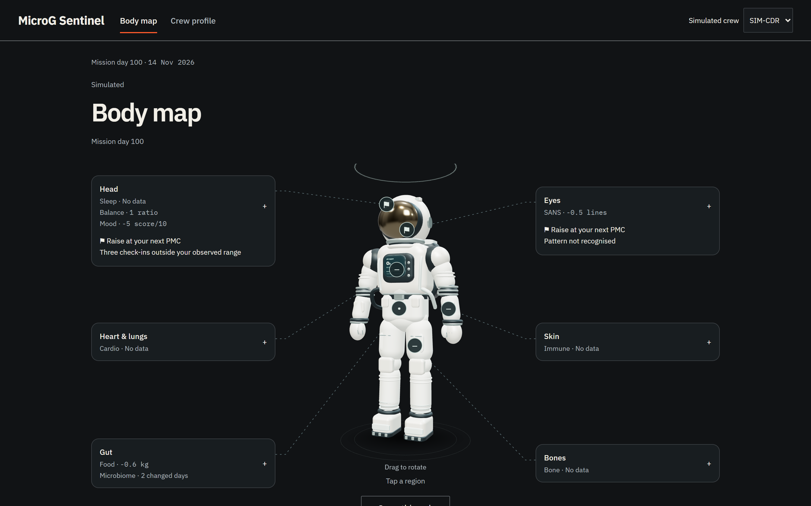
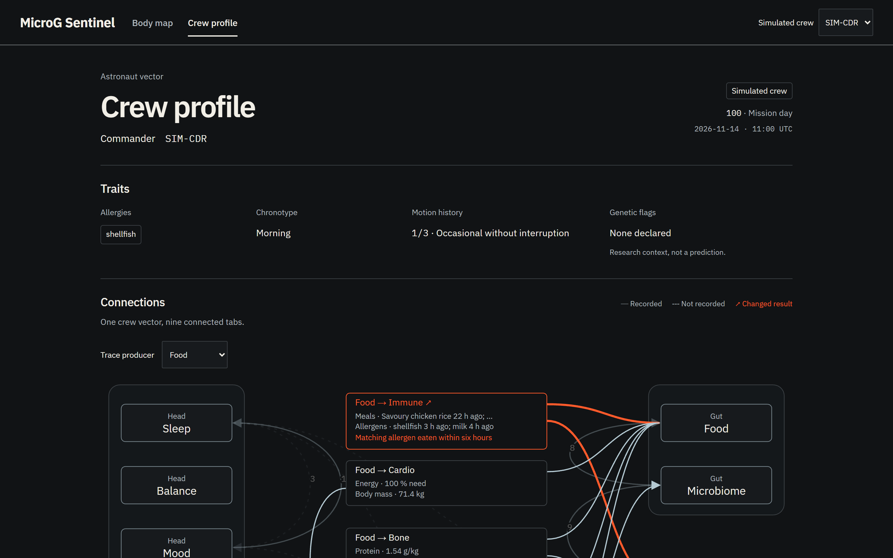
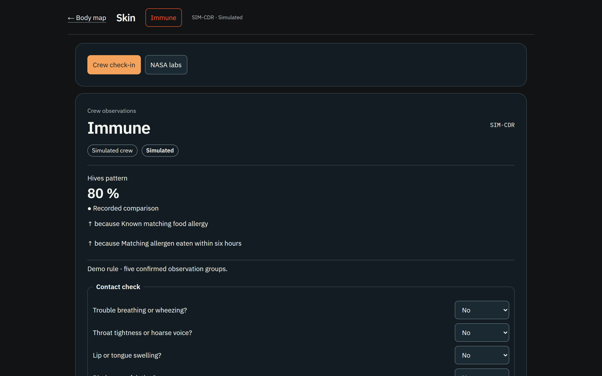
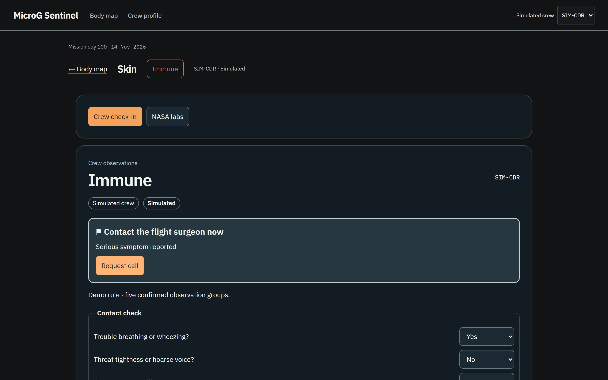

NASA Space Apps 2026 · Kuala Lumpur
Your body changes in space.
See what changed for you.
Crew health check-ins for long missions
Team (SW)² · Siang Woo & Shi Wei

The problem
private medical conference with the flight surgeon on the ISS
NASA human spaceflight health risks, each with its own signs
one-way signal delay from Mars, so help is never instant
Astronauts need a quick way to notice change in their own body, and to know when it cannot wait.
NASA's 5 hazards → our tabs
How it works
Tap the region that feels different
Its own quick input and the right chart
Traits, baselines and exposures link the tabs
Red flag: contact now. Unclear: next conference

One story, two tabs
A pattern match, never a diagnosis. Any "yes" to breathing, throat, swelling or fainting hides the score and says Contact the flight surgeon now.


Real NASA data, kept separate
Read-only replays, separate from crew data. SANS: rat ground analog; human eye scans require a data request.
Screening cut-offs (UAS7, PSQI, PHQ-9, MUST) come from Earth populations. Demo crew data is simulated and labelled.
What's next
An offline model that reads the astronaut vector and drafts questions for the next medical conference
Wearable sleep and heart data in place of manual entry, using the same signal contract
Replace Earth-population cut-offs and demo weights with crew-specific evidence
Queue reports for Moon and Mars links where a live call is minutes away